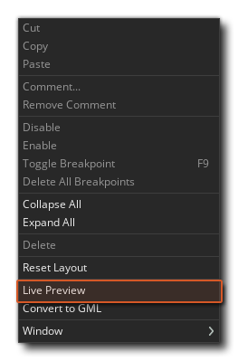
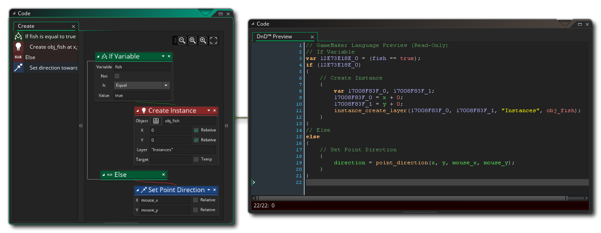
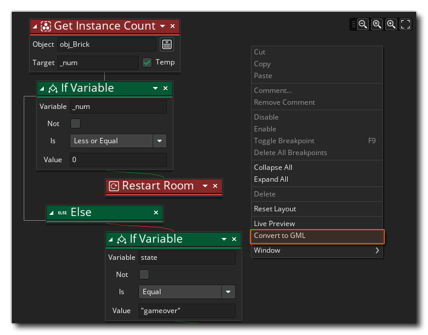
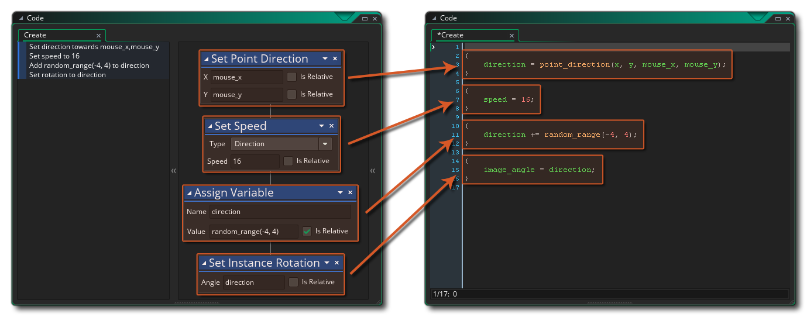
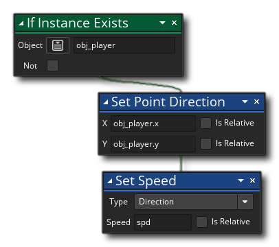
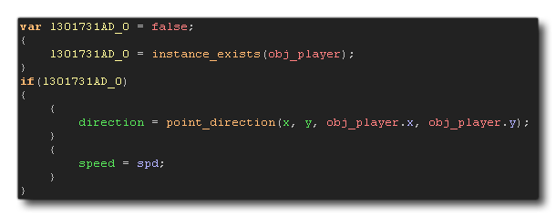
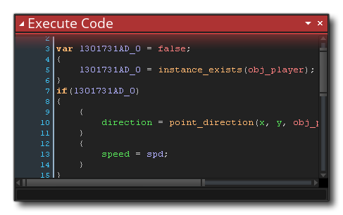

Another feature of GML Visual is that you can convert it into GML Code, and in this way see what exactly is going on behind the scenes when you use actions. Before actually changing the actions into code, however, you can first Preview them by using the right mouse button menu option Live Preview:

Which will open a new window:
As you add, change or remove GML Visual actions, the GML Live Preview will update to show you the actual code that is being created "behind the scenes". The code in the live preview cannot be edited directly, but you can select sections and copy them for pasting into GML scripts or Code Actions (for example).If you decide that you want to convert the GML Visual into code after seeing the preview, then this can be done again by clicking the right mouse button in any event workspace with actions and selecting Convert To GML Code.

The first time you do this you will be given a warning message saying that this is a one-way conversion, since you can convert actions to code, but you cannot convert them back to individual actions again later. Clicking Okay here will perform the conversion for you.
The resulting code will use {} to delimit individual actions, and you can clearly see what actions relate to which functions or variable declarations within the code. If the GML Visual is more complex then the code will be too, but the same general rules apply and code will be structured sequentially exactly the same as you have written the GML Visual. Note that sometimes the code will have extra local (temporary) variables added in to store certain values that will be used, for example this:
Will become this code:

Here the code first of all creates a local (temporary) variable and sets it to false, then it checks if the instance exists and sets the local variable to the return of the function call. The local variable is then checked to see if it is true or false and if it is true the rest of the code is run.
When learning to program using GML Visual, this can be an important tool in moving on to using GML Code at a later stage, but it's by no means obligatory and you can still make great games using GML Visual! It's also worth noting that while the conversion process is one way, after converting actions to code, you can go back to using GML Visual again by using the right click menu in the code editor and selecting Convert To GML Visual. This will place the previously created code within an Execute Code action and you can then continue to use GML Visual as before:
